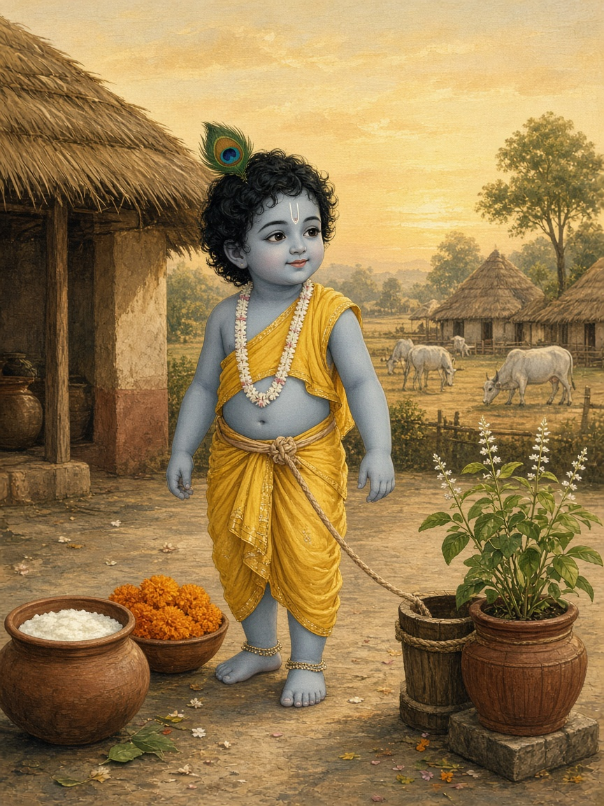
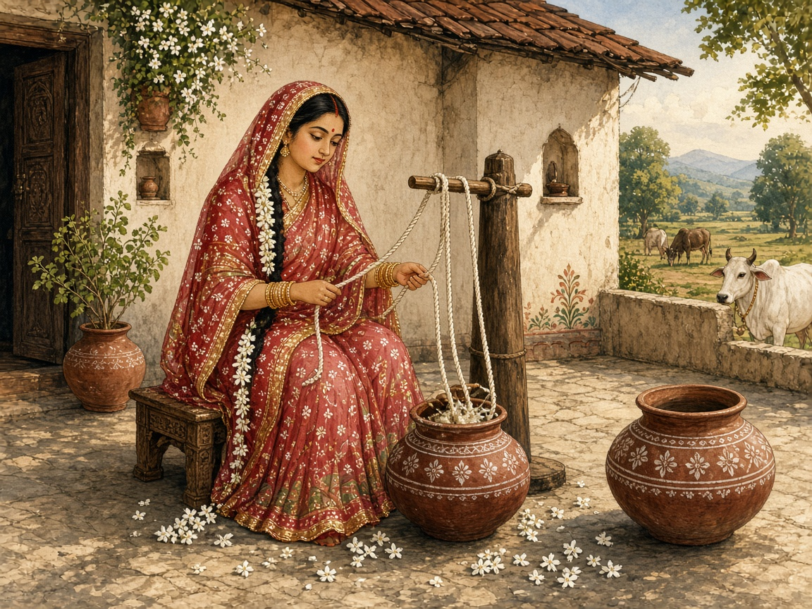
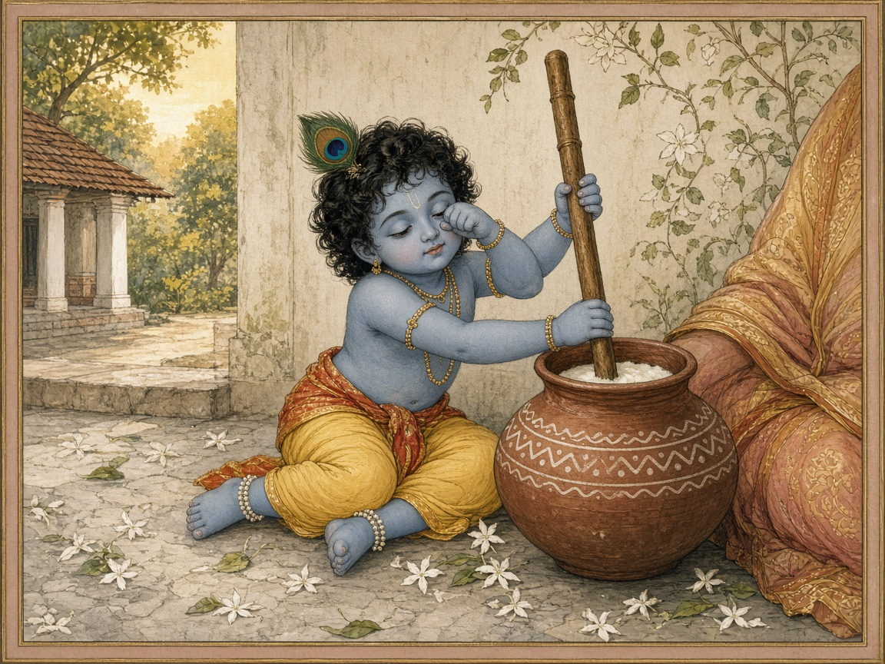

माँ और बच्चों के लिए · लगभग ६ से १२ वर्ष
एक दिन माँ ने दही मथा
वात्सल्य लीला की बाल कथा · पहला रूप

माँ और बच्चों के लिए · लगभग ६ से १२ वर्ष
वात्सल्य लीला की बाल कथा · पहला रूप
बाल कथायह केवल रूप है
स्वीकृति के बाद पूरी होगी
यह बड़ी पुस्तक का छोटा स्वर है।
उन्हीं लीलाओं का, छोटे वाक्यों में। माँ पढ़ें, बच्चा चित्र देखे। तेरह से पंद्रह वर्ष के पाठक बड़ी पुस्तक पढ़ेंगे। एक ही भाषा पाँच और पंद्रह, दोनों के लिए सच्ची नहीं होती।
यह नमूना केवल उस सुबह का है, जो पठन पुस्तक के पहले पृष्ठों में है। आगे की कथा हिन्दी पठन पुस्तक के स्वीकार होने पर बनेगी।
२

सुबह हो गई।
कृष्ण अभी सो रहे थे।
माँ यशोदा उठ चुकी थीं।
आज घर में बड़ा काम था। बहुत मिठाई बननी थी।
माँ ने स्वयं दही जमाया, और स्वयं मथने बैठीं।
३
मथते-मथते वे गाने लगीं।
गीत उनके लड़के का था।
वह कैसे चलता है। कैसे रूठता है। कैसे हँसता है।
दूसरा गीत उन्होंने नहीं गाया।
बालों से सफ़ेद फूल गिरने लगे।
माँ ने देखा नहीं।
४

कृष्ण जागे।
माँ पास नहीं थीं।
उन्होंने दही की आवाज़ सुनी।
रोते हुए उधर चले। कहाँ गईं। कहाँ गईं।
दोनों हाथों से डंडा पकड़ लिया।
मथना रुक गया।
५
माँ मुस्कुराईं।
मेरा बच्चा आ गया।
कृष्ण स्वयं गोद में चढ़ गए।
माँ ने उन्हें उठाया नहीं।
यही माँ की खुशी थी।
वे उसके मुस्कुराते मुख को देखती रहीं।
६
फिर आँगन में दूध उबलने लगा। माँ ने कृष्ण को उतारा, और दौड़ीं।आगे की बाल कथा, बड़ी पुस्तक के स्वीकार होने पर